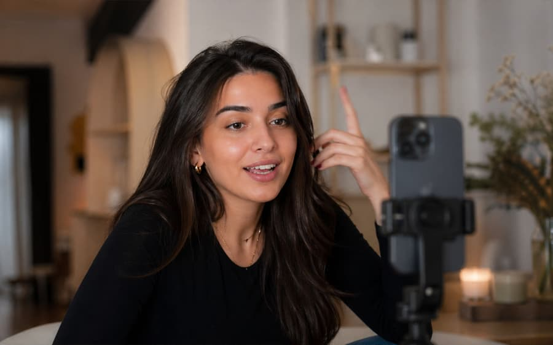

اختيار المؤثرين
ترشيح مؤثرين مناسبين حسب الدولة، المجال، الجمهور، المنصة، ونوع المنتج أو الخدمة.
منصة متخصصة في التسويق عبر المؤثرين في الخليج ومصر، تساعد الشركات والبراندات على فهم أسعار الحملات، اختيار المؤثر المناسب، وبناء حملات فعالة عبر تيك توك وإنستغرام وسناب شات.
نجاح حملات المؤثرين في الخليج ومصر يحتاج فهمًا دقيقًا للجمهور، الدولة المستهدفة، المنصة المناسبة، أسلوب المحتوى، وسلوك الشراء. لذلك نبني الحملات على الملاءمة بين البراند والمؤثر، وليس على الشهرة وحدها.

حلول متكاملة للشركات التي تبحث عن حملة مؤثرين منظمة، فاخرة، واضحة، وقابلة للقياس في السوق الخليجي والمصري.
ترشيح مؤثرين مناسبين حسب الدولة، المجال، الجمهور، المنصة، ونوع المنتج أو الخدمة.
إدارة الحملة من الفكرة والتفاوض والجدولة حتى النشر والمتابعة وتحليل النتائج.
حملات موجهة للسوق الخليجي عبر أكثر المنصات تأثيرًا في الوصول السريع وصناعة الطلب.
متابعة الوصول، التفاعل، المشاهدات، الرسائل، الطلبات، والتوصيات لتحسين الحملات القادمة.
نختار المنصة المناسبة حسب هدف الحملة: انتشار، مبيعات، زيارات، حجوزات، تحميل تطبيق، أو بناء ثقة للعلامة التجارية.
لكل سوق طريقة مختلفة في اختيار المؤثرين، صياغة الرسالة، توقيت النشر، والمنصة الأكثر تأثيرًا. لذلك تُبنى كل حملة حسب طبيعة الجمهور المحلي وليس بقالب واحد للجميع.
حملات مؤثرين في الرياض وجدة والدمام للمطاعم، العيادات، المتاجر، التطبيقات والبراندات.
حملات تسويق عبر المؤثرين في دبي وأبوظبي للبراندات الفاخرة، العقارات، السياحة والخدمات.
حملات مؤثرين موجهة للجمهور الخليجي عبر Snapchat وInstagram وTikTok بأسلوب موثوق ومباشر.
نخدم القطاعات التي تحتاج ظهورًا سريعًا وثقة عالية ونتائج ملموسة من خلال مؤثرين مناسبين لطبيعة المنتج والجمهور.
حملات مؤثرين لعيادات التجميل والعناية بالبشرة والعطور والبراندات النسائية في السعودية والإمارات والكويت.

حملات مؤثرين للمطاعم والكافيهات والفنادق والافتتاحات والعروض اليومية والتجارب السياحية في السعودية والإمارات.

حملات للتطبيقات والمتاجر الإلكترونية والمنتجات التقنية والألعاب والخدمات الرقمية في السعودية والإمارات والخليج.

حملات للشركات العقارية، الكورسات، الجامعات، الاستشارات والخدمات عالية الثقة.
كل حملة تبدأ من فهم البراند والجمهور، ثم اختيار المؤثرين، صياغة الرسالة، إدارة النشر، وقراءة النتائج بعد الحملة.
نحدد هدف الحملة، الدولة المستهدفة، نوع الجمهور، والمنصة الأفضل للوصول إليه.
نختار مؤثرين مناسبين حسب التفاعل، نوع المحتوى، المصداقية، وتوافق الجمهور مع البراند.
نحول الرسالة الإعلانية إلى محتوى طبيعي ومقنع يناسب أسلوب المؤثر والمنصة.
نراجع الأداء بعد النشر ونحدد نقاط القوة وفرص التحسين للحملات القادمة.
محتوى متخصص يساعد أصحاب الشركات على فهم أسعار المؤثرين، اختيار المنصة المناسبة، وتخطيط حملات ناجحة في الأسواق العربية.
دليل احترافي لاختيار المؤثر المناسب في الرياض وجدة والدمام حسب الجمهور والمنصة ونوع الحملة.
اقرأ المقالحملات الإمارات تحتاج ظهورًا راقيًا ورسالة واضحة تناسب البراندات والخدمات الفاخرة.
أفضل منصة تسويق عبر المؤثرين في دبيدليل شامل لفهم أسعار إعلانات سناب شات، اختيار المؤثر الحقيقي، وقياس نجاح الحملات في السعودية والإمارات والكويت وقطر.
اقرأ المقال الكاملتيك توك مناسب للانتشار السريع، صناعة الترند، وتجربة المنتجات عبر فيديوهات قصيرة مؤثرة.
خطط لحملتكالتكلفة تختلف حسب حجم المؤثر، الدولة، المنصة، مدة الظهور، نوع المحتوى وحقوق الاستخدام.
اقرأ المقال الكاملالمشاهير مناسبون للانتشار الواسع، بينما الميكرو إنفلونسر أقوى في الثقة والجمهور المتخصص.
اختر الأنسبنختار نوع الحملة حسب هدفك التجاري: زيادة الوعي، جذب عملاء محتملين، رفع الطلبات، إطلاق منتج، أو بناء صورة قوية للبراند.
للبراندات الجديدة
للمطاعم والمتاجر
للإطلاقات الكبيرة
استراتيجية وتنفيذ
إجابات مختصرة تساعدك على اختيار نوع الحملة والمنصة والسوق الأنسب لعلامتك التجارية.
التكلفة تختلف حسب الدولة، حجم المؤثر، المنصة، نوع المحتوى، مدة الظهور، وحقوق استخدام الفيديو أو الصور بعد النشر.
نعم، نستهدف السعودية والإمارات والكويت وقطر والبحرين وعمان ومصر حسب طبيعة البراند والجمهور المطلوب.
TikTok مناسب للانتشار السريع، Snapchat قوي في الخليج، Instagram مناسب للهوية والثقة، وYouTube مناسب للمحتوى الطويل.
أرسل تفاصيل مشروعك وسنساعدك في تحديد المؤثرين المناسبين، المنصة الأفضل، ونوع الحملة الأنسب لعلامتك التجارية في الخليج أو مصر.
اطلب استراتيجية حملةاملأ النموذج بتفاصيل المشروع، الدولة المستهدفة، المنصة المطلوبة، ونوع الجمهور. سيتواصل معك فريق Viva Media Creative لمناقشة الحملة المناسبة.
Influencer Platform VIP